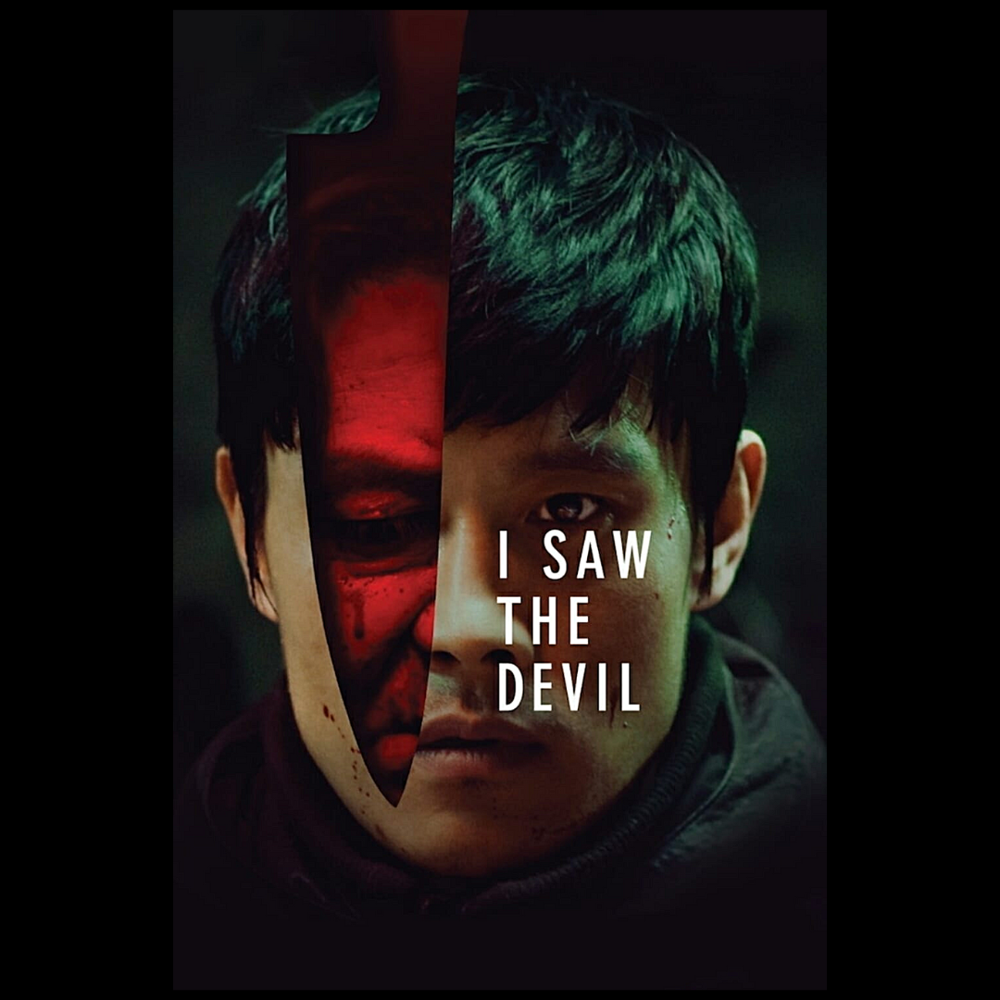

Cine DevaneiosConteúdos de Cinema!Introdução ao Roteiro AudiovisualO cinema é, por etimologia, a arte do movimento. A ilusão da imagem que se move evoluiu ao longo de décadas para chegar ao que hoje conhecemos. Dentro de um aspecto mercadológico, uma das partes mais importantes para o funcionamento do cinema é o entedimento de que as obras audiovisuais são realizadas em um esforço conjunto, de múltiplas partes. Há departamentos e departamentos responsáveis pela árdua e gratificante tarefa de se fazer cinema. Dentro deles, há um primordial, a partir do qual todos os outros se organizam e se comunicam a fim de se dar forma a uma obra: o roteiro. Críticas e Reviews de um jeito que você nunca viu antes. |
| Conheça o site! |